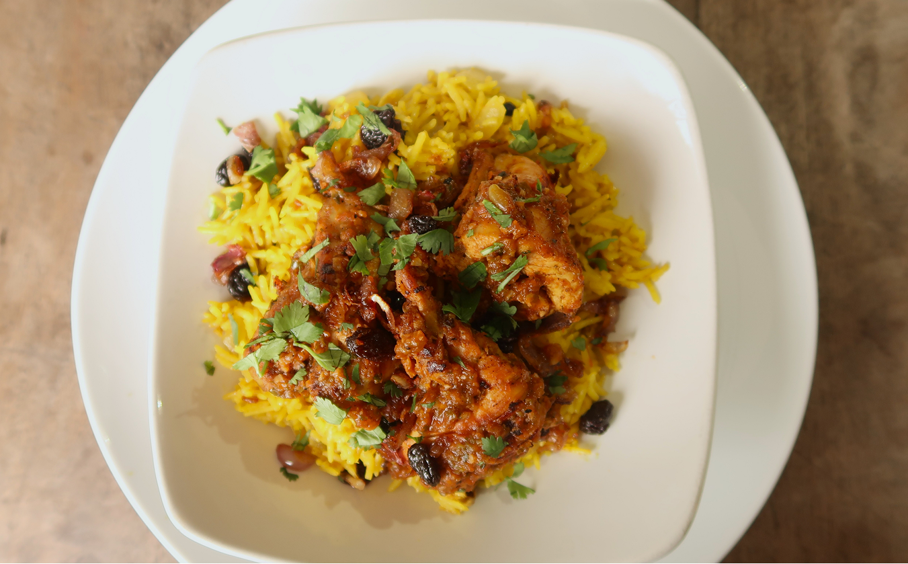

It has a balanced sweet and sour taste, where the distinctive sweetness of the dates appears first, followed by a slightly tangy yogurt aftertaste.

A traditional chicken and rice dish originating from the Arabian Gulf region and considered one of the national foods of the United Arab Emirates. It is also popular in Kuwait, Bahrain, and Qatar. This dish developed from ancient spice trade routes that connected the Middle East with India and Persia, creating a unique blend of basmati rice, chicken, and aromatic spices such as cardamom, cinnamon, turmeric, cumin, and loomi (dried black lime), which gives the dish a savory flavor with a slight tangy taste
It has a balanced sweet and sour taste, where the distinctive sweetness of the dates appears first, followed by a slightly tangy yogurt aftertaste.

It has a creamy and smooth texture from the yogurt, combined with a slightly fibrous and chewy texture when you bite into the dates.

Protein 120g, Fat 100g, Vitamin B12, Zinc, Iron

Protein 75g, Carbohydrate 780g, Low Glycemic Index, Vitamin B, Magnesium

Fat 55g, Healthy Fats, Calory Dense

Carbohydrate 35g, Lycopene

Natrium, Antioxidant

The total calories of Chicken Machboos range from about 1,400–1,500 kcal. The ingredients include chicken (about 1500 kcal), Bamasti rice (about 3600 kcal), Butter, oil, Olive Oil(about 500 kcal), Tomato Sauce (about 200 kcal), And Seasoning & Salt (about 15 kcal). This dish is rich in energy because it contains protein from chicken, carbohydrates from rice, and healthy fats that create a savory flavor and aromatic taste.